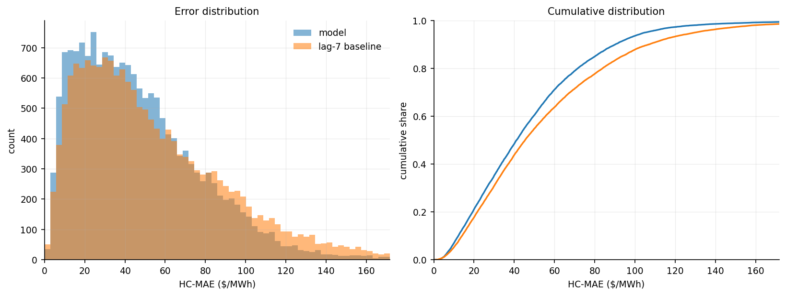
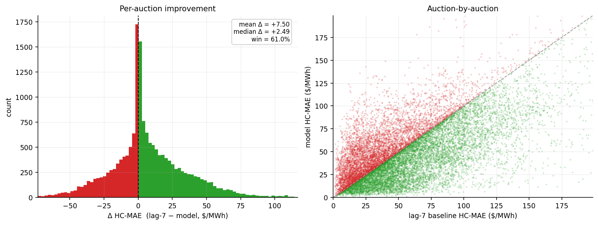
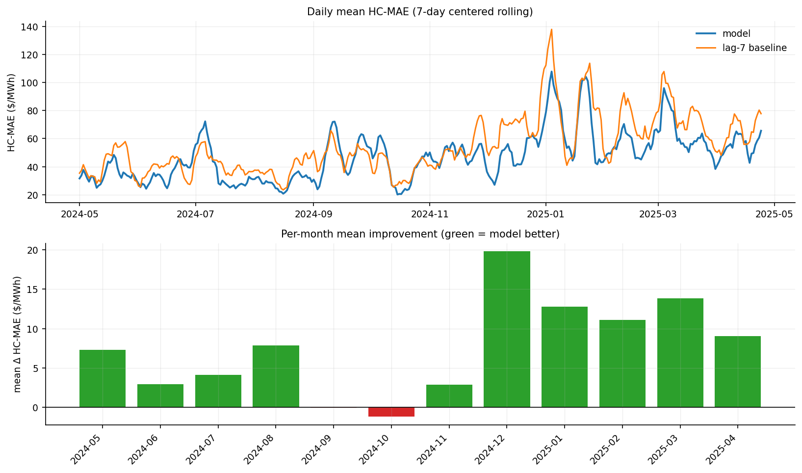
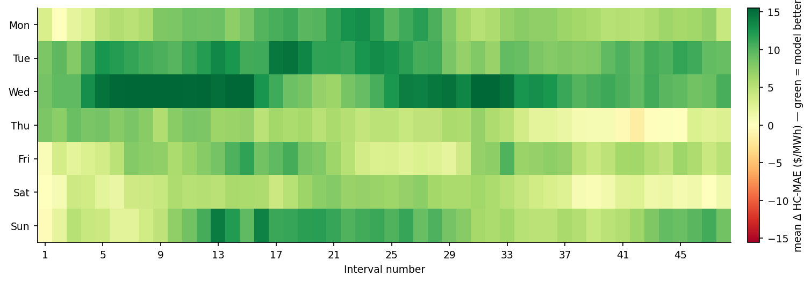
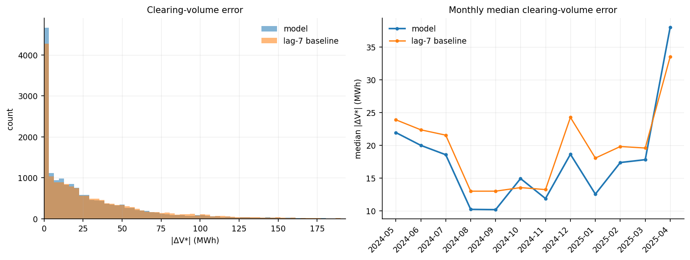
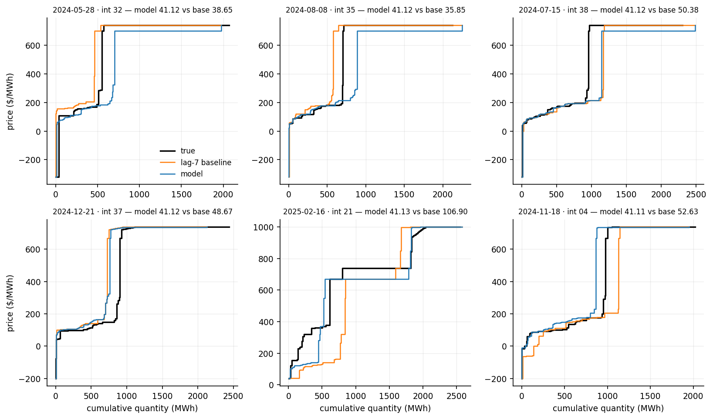
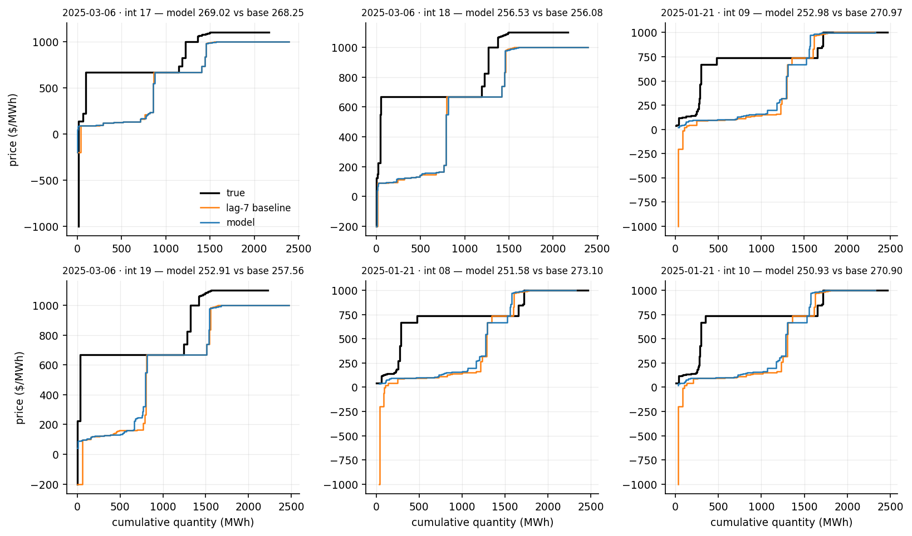

Nothing is fitted. The model is the weighted median weekly.wmedian with one change at the price cap.
7-day-ahead · test 2024-05-01 → 2025-04-24 · 17,232 auctions · reference: lag-7 baseline
| This model | lag-7 baseline | |
|---|---|---|
| Mean HC-MAE ($/MWh) | 47.33 | 54.83 |
| Median HC-MAE ($/MWh) | 41.12 | 45.35 |
| Win % vs lag-7 | 61.0% | - |
| Mean |ΔV*| (MWh) | 29.33 | 33.66 |
| Median |ΔV*| (MWh) | 16.41 | 18.75 |
| Mean |ΔP*| ($/MWh) | 26.58 | 31.48 |
| Median |ΔP*| ($/MWh) | 1.22 | 2.06 |




The true demand curve is crossed with the predicted supply curve, and the error is how far this moves the clearing point (V*, P*).
| This model | lag-7 baseline | |
|---|---|---|
| Mean |ΔV*| (MWh) | 29.33 | 33.66 |
| Median |ΔV*| (MWh) | 16.41 | 18.75 |
| Win % on |ΔV*| | 38.2% | - |
| Mean |ΔP*| ($/MWh) | 26.58 | 31.48 |
| Median |ΔP*| ($/MWh) | 1.22 | 2.06 |
A few price-floor auctions make the mean of |ΔP*| large, so the median is the summary.


